Arbitro : González Vázquez , del Comité Gallego.
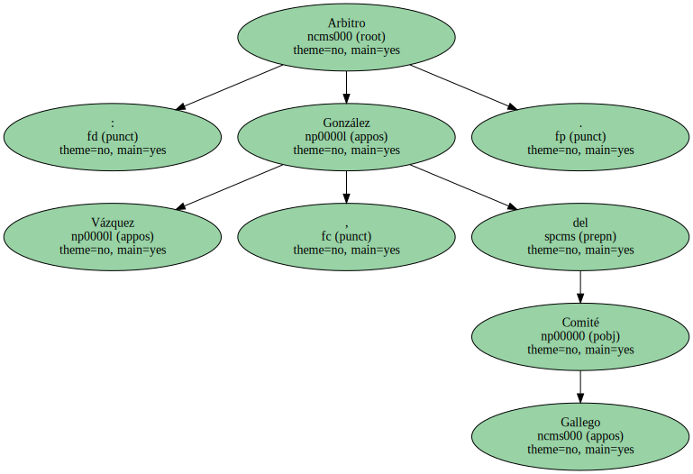Amonestó a los locales Rokki , Corona , Ortega y Melgar , y a los visitantes Otero , Hugo , Parrado y Lucas , este mientras calentaba en la banda.
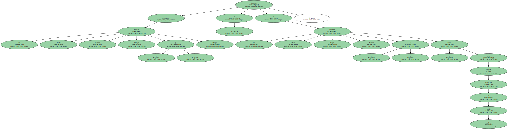Incidencias : Último encuentro de liga de Segunda División , jugado en el Estadio Carlos Belmonte ante unos 8.000 espectadores.
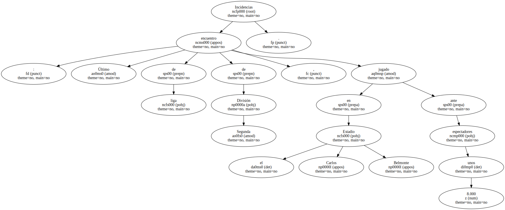Se guardó un minuto de silencio por el último atentado de ETA.
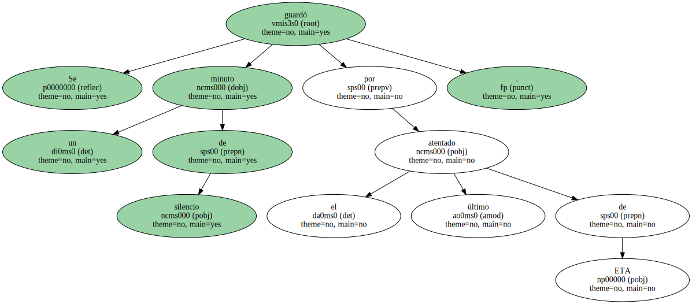El Albacete infantil , campeón regional , saludó antes de iniciarse el encuentro y en el descanso se entregaron los trofeos en las distintas categorías de los campeonatos locales de fútbol.
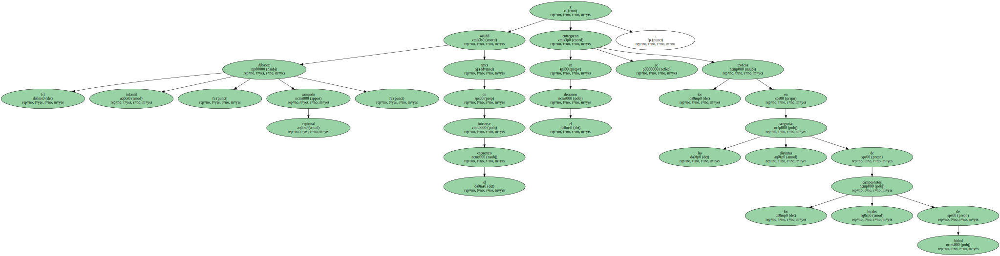Padilla se retiró lesionado en el minuto 73 y su equipo se quedó con diez al haber efectuado ya los tres cambios.
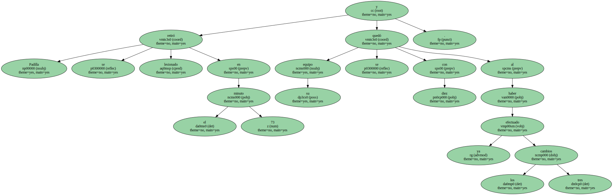Comentario : El Getafe confirmó la permanencia en Segunda División al derrotar a domicilio al Albacete , tras ocho partidos sin conocer la victoria , gracias a un golazo de Parrado , desde fuera del área , en un choque en el que los locales estuvieron más pendientes de homenajear a los futbolistas que no van a continuar en el club.
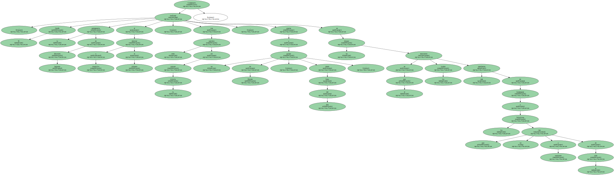Los primeros minutos del partido fueron de excesivo respeto , con ambos rivales limitándose a dejar pasar el tiempo.
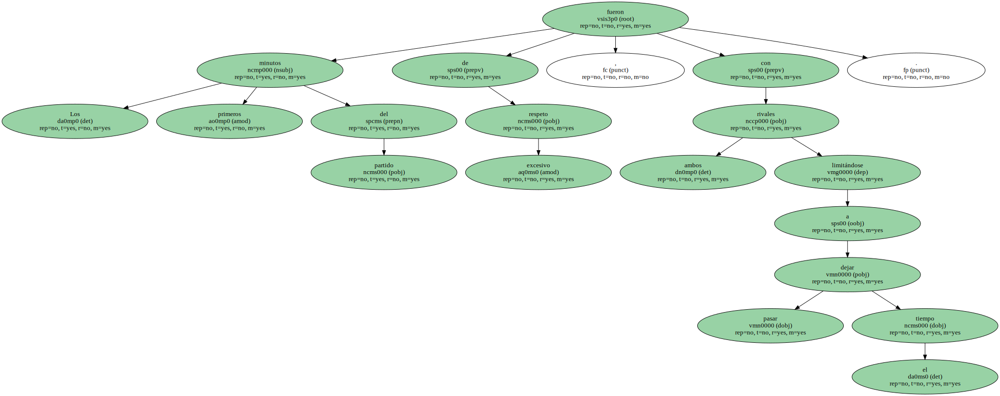Mientras el Albacete no se jugaba nada , el reloj corría a favor del Getafe , ya que con este resultado mantenía la categoría.
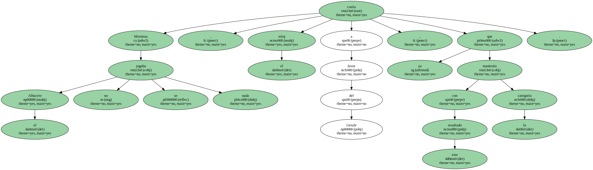En el minuto 18 , sin embargo , todo cambió , ya que el gol anotado por el Recreativo en Pamplona , ante el Osasuna , mandaba a los madrileños a Segunda B.
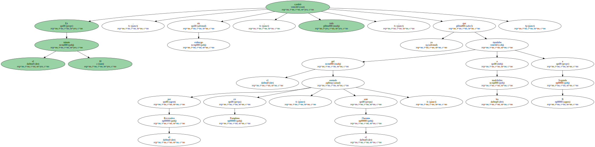A partir de ahí , la tensión se apoderó del cuadro getafeño , que apretó el acelerador de forma casi suicida.
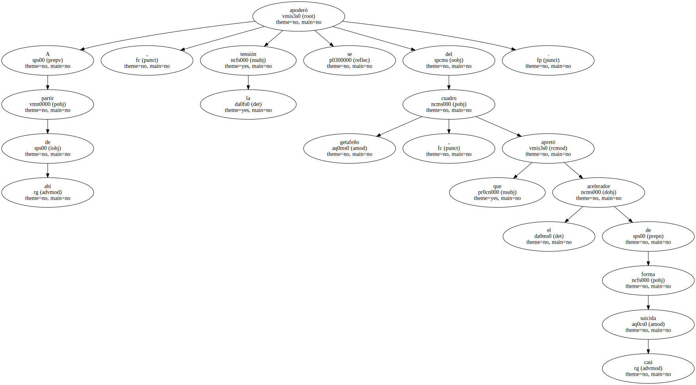El Getafe acorraló al Albacete en su área , intentando el gol , aunque a la desesperada , lo que provocó contras y ocasiones claras , que no concretaron ni Sabas ni Javi Guerrero , aunque enfrente tuvieron a un Santi Lampón que lo paraba absolutamente todo.
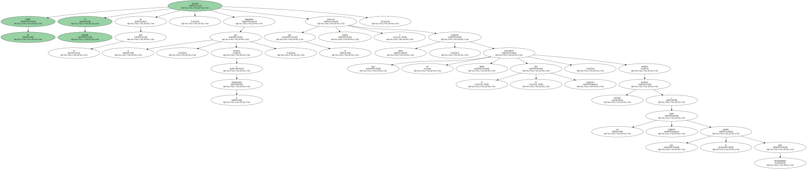La segunda parte comenzó con dos claras ocasiones para los de Pedro Parada , una de ellas con disparo al larguero de Javi Guerrero.
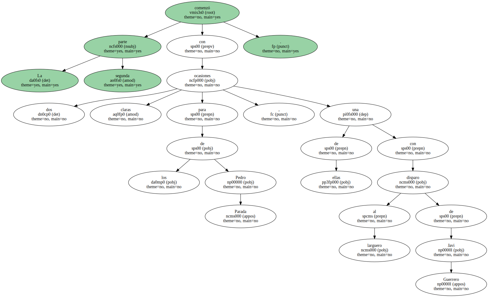El empate de Osasuna en El Sadar , aplaudido en la grada por la afición madrileña , espoleó a los de Martín Prado.

Tanto que a los pocos minutos Parrado se adelantó en el marcador con un soberbio tanto de Parrado , para guardar en la videoteca.
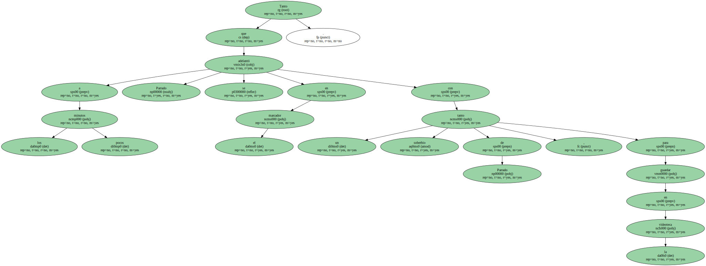El Albacete , entonces , se dedicó a rendir homenaje a los jugadores que acaban contrato.
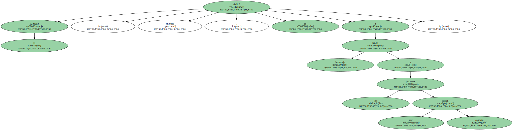Unos eran retirados para que fuesen aplaudidos por el público , caso de Sala , y otros entraron para jugar sus últimos minutos con la camiseta blanca , caso del serbio Vanic.
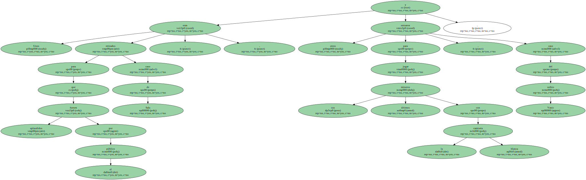Por si fuera poco , el Getafe se encontró con la suerte de cara con la lesión de Padilla , en el minuto 73 , y los tres cambios efectuados en el cuadro local , que dejó al Albacete los últimos 17 minutos con diez hombres sobre el terreno de juego.
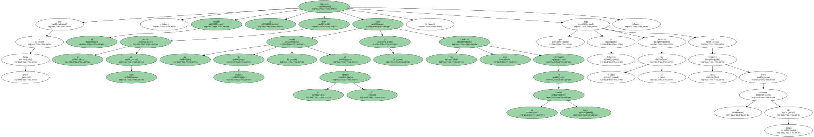Al final del choque , la afición del Getafe se lanzó al terreno de juego para celebrar junto a los jugadores de Martín Prado una más que sufrida permanencia , que certificó el golazo de Parrado.
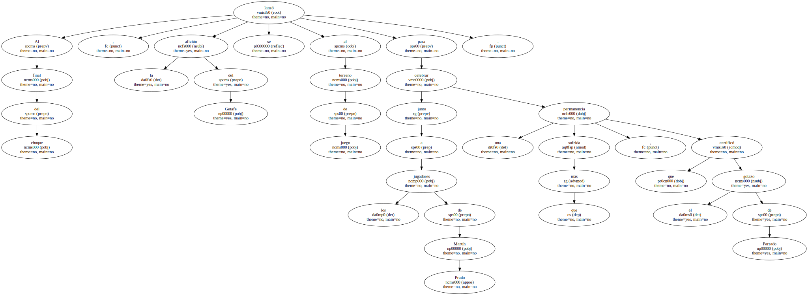